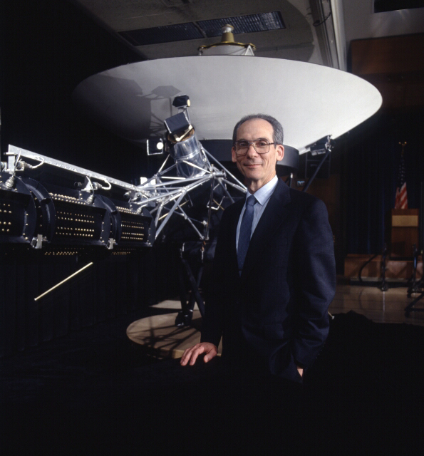
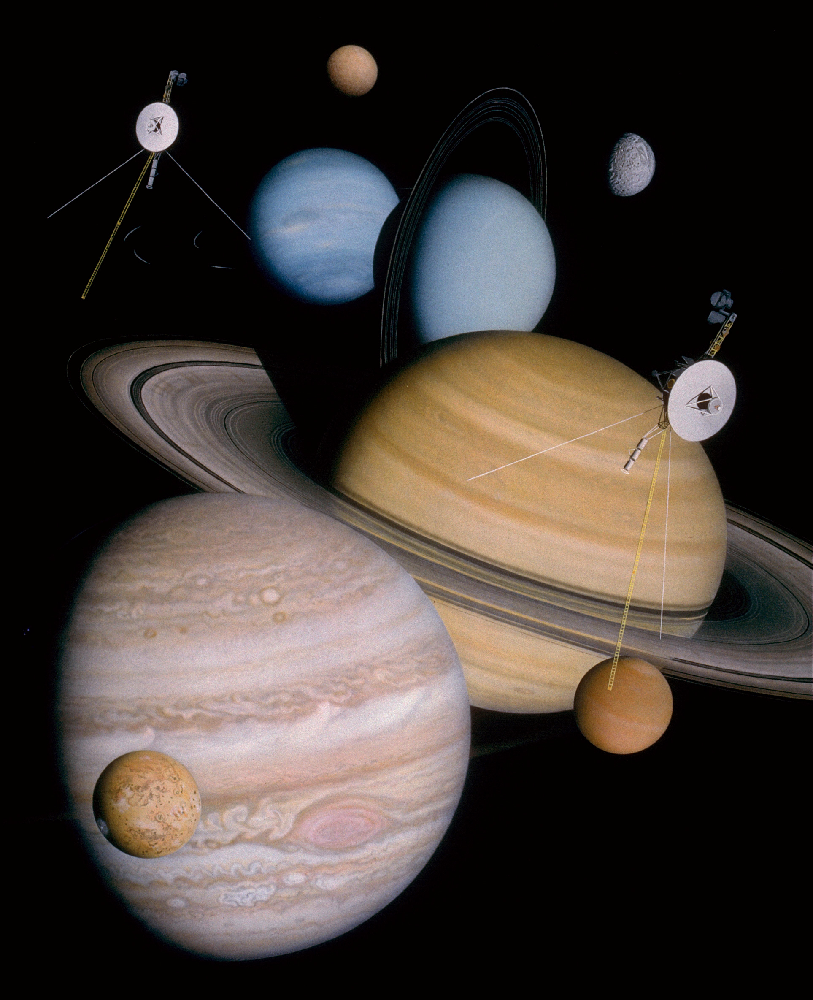

Edward C.Stone
Stone with a Voyager model in 1992
Edward Carroll Stone (born January 23, 1936) is an American space scientist, professor of physics at the California Institute of Technology, and former director of the NASA Jet Propulsion Laboratory (JPL).
As project scientist for the unmanned Voyager spacecraft missions to the outer Solar System from 1972, and a major spokesman for the Voyager science team, he became especially well known to the public in the 1980s. He has since been principal investigator on nine NASA spacecraft missions and coinvestigator on five more. He was the principal investigator for the Cosmic Ray System on the Voyager 1 and 2 spacecraft, an experiment to measure cosmic rays.[6] He also appeared in The Farthest, a 2017 documentary on the Voyager program. Stone retired from project scientist of the Voyager missions in 2022 after holding the role for 50 years.
The Voyager Program
Montage of planets and some moons that the two Voyager spacecraft have visited and studied, along with the artwork of the spacecraft themselves. The long antenna that extends out from the spacecraft and magnetometer boom can be seen. The planets shown include Jupiter, Saturn, Uranus, and Neptune. Only Jupiter and Saturn have been visited by spacecraft other than Voyager 2.
The Voyager program is an American scientific program that employs two robotic interstellar probes, Voyager 1 and Voyager 2. They were launched in 1977 to take advantage of a favorable alignment of Jupiter and Saturn, to fly near them while collecting data for transmission back to Earth. After launch the decision was taken to send Voyager 2 near Uranus and Neptune to collect data for transmission back to Earth. As of 2022, the Voyagers are still in operation past the outer boundary of the heliosphere in interstellar space. They collect and transmit useful data to Earth.
Voyager did things no one predicted, found scenes no one expected, and promises to outlive its inventors. Like a great painting or an abiding institution, it has acquired an existence of its own, a destiny beyond the grasp of its handlers. — Stephen J. Pyne